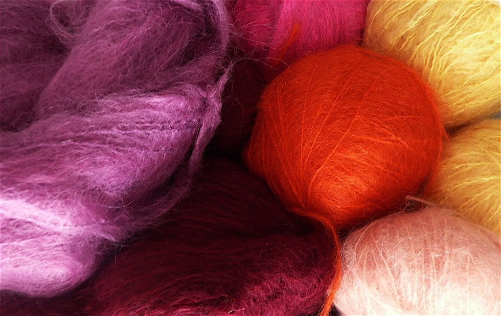
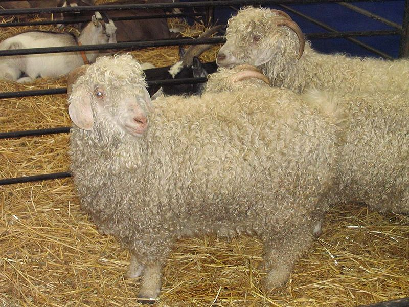

La toison de la chèvre angora sert à fabriquer le mohair, une sorte de laine.
Sa laine est non seulement un très bon isolant thermique, mais les vêtements fabriqués avec cette matière sont très légers à porter.
On peut aussi en faire des couvertures.
Le mohair est une laine fabriquée à partir de la toison de la chèvre angora, chèvre dont on connaissait l'existence au Tibet 2000 ans av. J.-C. et chez les Sumériens au IVe siècle av. J.-C..
L’appellation de cette chèvre « angora » en français est due à sa présence en Anatolie et à une déformation du nom de la ville d'Ankara.
Elle est caractérisée par l’alliance d'une bonne capacité d'isolant thermique (du froid comme du chaud) et d'une très grande légèreté.
Elle est notamment utilisée avec des fibres synthétiques pour la réalisation de peaux de phoque pour le ski de randonnée.
On s'en sert aussi pour fabriquer des chandails (pull), des bas, des châles, des foulards, des tuques (bonnet) et des mitaines (gant).
Elle sert également à fabriquer des couvertures. Le mohair a notamment été utilisé pour la fabrication des teddy bears (ours en peluche) aux États-Unis dès 1903.
Des chèvres angora sont élevées actuellement en France et également au Québec.
La plupart des éleveurs vendent directement le mohair en produits finis.
Une charte de qualité a été instituée : « le mohair des fermes de France ».
Le mohair est aussi utilisé pour créer des perruques pour les poupées anciennes ou pour des poupées plus modernes comme les Pullip ou les BJD.
|  |  |